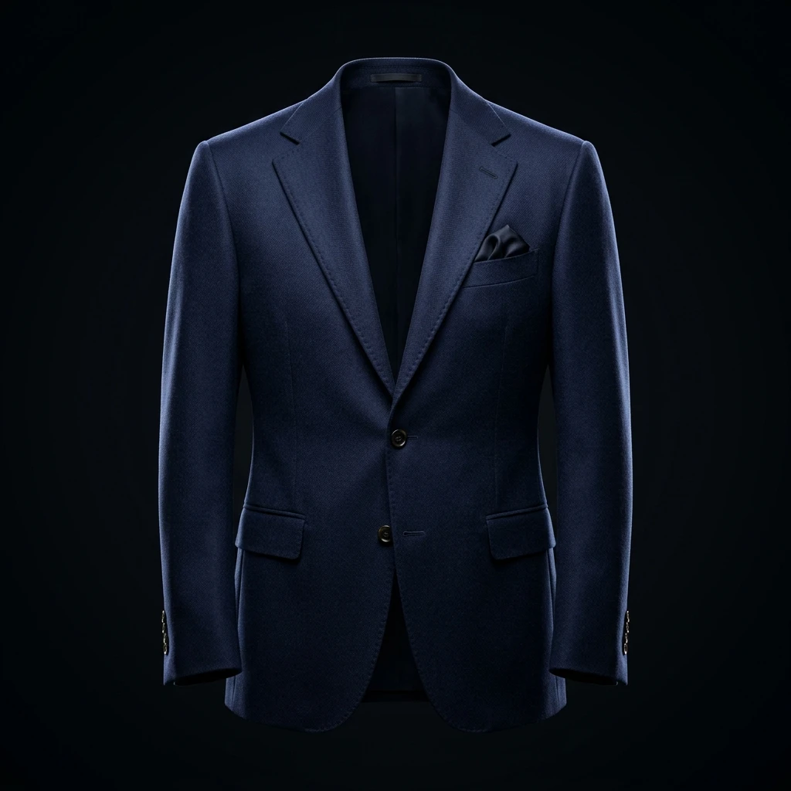

Your Outfit Planner Starts With Your Wardrobe
Outfit Planner doesn't generate outfits out of thin air. It works from the garments already saved in your digital wardrobe.
Don't have your wardrobe digitised yet? Start by building your Digital Wardrobe →
What Is an AI Outfit Planner?
An AI outfit planner helps you decide what to wear by combining available wardrobe pieces into complete looks based on relevant styling context, such as occasion and colour.
Not every outfit planner works the same way. Colourity focuses on combinations built from your own wardrobe, rather than simply generating generic fashion ideas.
Generic Outfit Inspiration
"Here is an outfit you could wear, or buy." Not connected to what's actually in your closet.
Colourity
"Here is an outfit you can create using what you already own." Built from your digitised wardrobe.
Three Ways to Get an Outfit
Colourity offers three distinct ways to land on an outfit, depending on how much control you want.
Outfit Wizard
Choose a base garment where supported, then choose an occasion. Colourity builds a compatible outfit from your available wardrobe — full control over the starting point.
Surprise Me
A one-tap outfit suggestion from your wardrobe, weather-aware so you're not suggested the wrong garment for the day — for when you don't want to build one manually.
Today's Pick
A daily, ready-made outfit suggestion surfaced on Home, with the ability to log what you actually wore that day where supported.
How Colourity Builds a Look
Once you ask for an outfit, Colourity works through your available wardrobe and pairs individual pieces — tops, bottoms, and footwear — into a complete look. Where supported, this can also include outerwear and layering pieces, not just a top and bottom.
Where verified, the matching considers things like colour compatibility, occasion, formality, and which pieces are actually available in your wardrobe.

Why the Recommendations Are Consistent
Colourity uses defined colour-science and matching rules for outfit pairing, rather than generating a completely new answer at random each time. That doesn't mean every recommendation is guaranteed to be perfect for every taste — it means the same wardrobe and the same occasion will produce consistent, explainable pairings, instead of a different guess every time you ask.
Occasion & Weather Aware Recommendations
You don't just get an outfit — you can ask for one suited to the situation. An everyday casual look, a work outfit, or a festive occasion look each draw on different pieces from your wardrobe, matched to the right formality level. Surprise Me also factors in current weather, so you're not suggested a garment that doesn't suit the day.
Explore Outfits & Styles
Beyond building outfits on demand, Explore Outfits & Styles is a browsable feed of complete outfit looks. Tappable hotspots over each garment let you see the individual pieces that make up a look — connecting outfit inspiration back to your own wardrobe rather than leaving it as a disconnected photo.

A Practical Example
You Own
- Navy shirt
- Beige chinos
- Brown loafers
You Need
A smart-casual work outfit
Colourity Combines
Navy shirt + beige chinos + brown loafers = smart-casual look
Why It Works
- — Balanced colour relationship between navy and beige
- — Appropriate formality level for the occasion
- — A complete outfit from pieces already in the wardrobe
This is one illustrative example of the logic Colourity applies — not the only combination that would work, and not a claim that these exact pieces suit everyone.
You May Have More Outfits Than You Think
"I have nothing to wear" is rarely about literally having no clothes — it's usually about not seeing the combinations that already exist in your closet. A digitised wardrobe makes those combinations visible, and Outfit Planner turns them into an actual look.
Frequently Asked Questions
An AI outfit planner helps you decide what to wear by combining wardrobe pieces into complete looks based on relevant styling context, such as occasion and colour. Colourity's Outfit Planner builds these combinations from your own digitised wardrobe rather than generating generic fashion ideas.
Yes. Colourity's Outfit Planner builds outfit combinations using the garments already saved in your digital wardrobe.
Colourity uses deterministic colour-science and matching rules — colour harmony, pattern compatibility, and formality tiers computed from your garments' attributes — rather than generating a new answer at random each time. This creates consistency in what you're recommended.
Yes. The Outfit Wizard lets you choose a base garment where supported and an occasion, and Colourity builds a compatible outfit from your available wardrobe.
Yes. Today's Pick surfaces a daily outfit suggestion on Home, with the ability to log what you actually wore where supported.
Yes, for Surprise Me. It pulls current weather conditions so it doesn't suggest the wrong garment for the day.
Outfit combinations are built from what's currently in your digital wardrobe, so the more garments you've added, the more combinations become available. If a look is missing a piece, that's exactly the kind of gap Scan Before You Buy and Shop the Gap are designed to help with.
Yes. Explore Outfits & Styles is a browsable feed of full outfit looks, including tappable hotspots over each garment so you can see the individual pieces that make up a look.
Found a Gap in Your Wardrobe?
If an outfit recommendation highlights something you don't own, the next question is: should you buy it? Scan Before You Buy checks a potential purchase against your existing wardrobe and colour profile before you spend.
See how Scan Before You Buy worksRelated Masterclass Guides
Plan Your Outfits Effortlessly
Download Colourity on Android to get started for free.
Get Colourity App